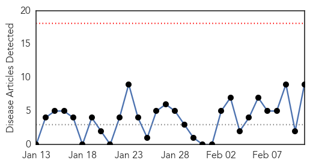

30 Day Trends
Web: 0 alerts, 0 warnings
Twitter: 0 alerts, 0 warnings
Top Articles:
- 0.993
- Several vaccines available to control meningitis
- 0.950
- Fighting Meningitis Globally
- 0.893
- Queen's Professor Melody Torcolacci, Who Taught Anti-Vax Material, Takes Leave
- 0.813
- Second Acadia student has meningitis
- 0.670
- Latest on likely case of bacterial meningitis at Yale University
- 0.590
- No outbreak of CSM in Bongo District
- 0.587
- JFK Memorial Hospital fined for discharge safety
- 0.578
- Students sought who partied with Oregon man stricken by meningococcal disease
- 0.576
- Students sought who partied with Oregon man stricken by meningococcal disease
Top Tweets:
-
No tweets found for Feb 11, 2015
Web/News Articles
Tweets

Article Locations